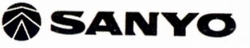

SANYO（サンヨー）/OTTO（オットー）
かつて（*）総合家電メーカーであった三洋電機のオーディオブランド。総合家電メーカーのオーディオブランドの中では後発の方であり、管理人の印象ではあまり目立った存在ではなかった。ただし「SX」で始まるスピーカーにはスパイラルホーンのシリーズや、ユニットの前後に磁気回路を設けた製品があり、カセットデッキでは独自のノイズリダクション「スーパーD」を開発するなど時折ユニークな製品を出していた。他の家電系ブランドと同様に1980年代後半に姿を消した。ブランド名OTTO（オットー）は、メーカーの理念「Orthoponic Transistorised Technical Operation(トランジスター技術を駆使し、真の音を追求した音響装置）」から来ているらしい。
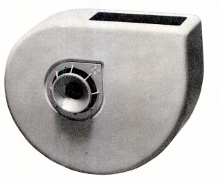
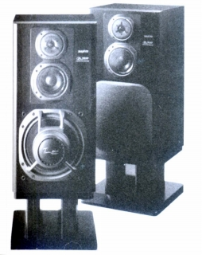
（左 SX-300X 右 SX-Z3000)
ヘッドフォンに関しては1960年代にすでに発売していたので老舗といってもいい存在である。しかし他のブランドと比較してみると機種数をあまり増やさないブランドだった。他の家電系オーディオブランドと同様に、1970年代始めは「SANYO」ブランドでヘッドフォンを発売していた。
オーディオ用ヘッドフォンの型番は一貫として「E」を使用していた。その他に「初期ラジカセの研究室」様の同社の1976年のラジカセのカタログでE-310とともにRB9191というステレオヘッドフォン（\2,300）の型番が掲載されている。
＊サイト公開（2009年6月）後の2011〜2012年で、メーカーとしての三洋電機は、事実上消滅しました。
�T.「SANYO」時代の製品（〜1973年頃）
「SANYO」時代の製品は、他社と比較して特に特徴のあるモデルはない。
E-200 E-210 E-400 E-500 E-550 E-800 (２ウェイ型） E-100
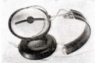
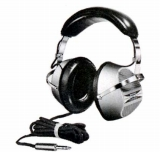
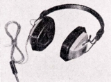
（左 E-200 中央 E-210 右 E-800)＊E-210のスペック等について豊永尚輝 氏から情報の提供を受けました。ありがとうございます。
�U.OTTO時代の製品（1974年〜）
�@前期（〜1980年）の製品
OTTOブランドになってからは、カラフルな薄型デザインの製品を展開した。最上級機は動電全面駆動型のE-1000。
E-10 E-310 E-330 E-510
（4チャンネル機） E-450X
（動電全面駆動型） E-1000
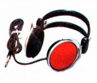
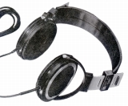
（左 E-310 右 E-1000)�A後期（1980年〜）の製品
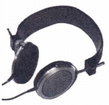 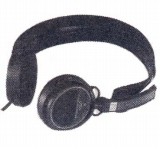
�Bコードレス機
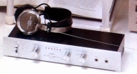
(WE-01)�C1980年代のゼネラルオーディオ？向けの製品
（サンヨーブランド）
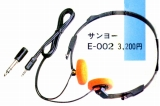
＊E-200、E-210、E-310、E-510について豊永尚輝 氏所有機の画像を使用しました。ありがとうございます。